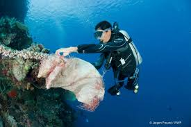
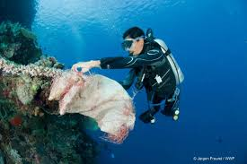
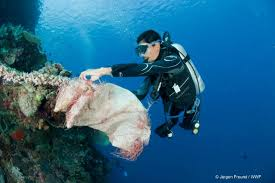
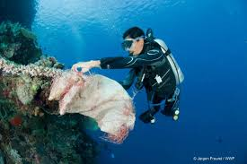

1. Pengurangan Polusi dan Kerja Sama Internasional
- Membuat perjanjian global untuk mengurangi sampah plastik dan polusi laut lintas negara.
- Melakukan kerja sama untuk mengawasi kapal-kapal yang membuang limbah ke laut.
2. Pengaturan Penangkapan Ikan dan Perlindungan Biodiversitas
- Menetapkan kuota penangkapan ikan dan mencegah overfishing.
- kawasan konservasi laut hingga 30% dari luas laut dunia pada tahun 2030 (Target 30x30).
3. Teknologi Pengawasan Laut
- Menggunakan satelit, drone, dan sistem digital untuk memantau keadaan laut dan mendeteksi pencemaran serta illegal fishing.
- Mengembangkan teknologi untuk membersihkan mikroplastik dan limbah di laut dalam.
4. Mengatasi Dampak Perubahan Iklim
- Mengurangi emisi karbon global untuk mencegah pemanasan dan pengasaman laut.
- riset untuk melindungi dan memulihkan terumbu karang dari pemutihan akibat suhu laut.
5. Pendidikan dan Kampanye Global
- Melaksanakan kampanye internasional seperti World Oceans Day dan Clean Seas Campaign untuk meningkatkan kesadaran dunia.
- Mengajarkan pentingnya laut sejak usia dini melalui pendidikan global.
1. Pengurangan Sampah Plastik dan Pengelolaan Limbah
- Meningkatkan pengelolaan sampah di daratan agar tidak berakhir di laut.
- Mendorong program “Zero Waste” dan daur ulang plastik.
- Menguatkan kebijakan pelarangan penggunaan plastik sekali pakai.
2. Pengawasan dan Penegakan Hukum
- Memperketat pengawasan terhadap aktivitas pelayaran, penangkapan ikan ilegal (illegal fishing), dan pencemaran laut.
- Memberikan sanksi tegas kepada pelaku pencemaran laut dan kapal yang membuang limbah sembarangan.
3. Restorasi dan Konservasi Ekosistem Laut
- Melakukan penanaman terumbu karang dan mangrove.
- Membangun kawasan konservasi laut (Marine Protected Areas) di wilayah perairan penting.
4. Edukasi dan Pelibatan Masyarakat Pesisir
- Memberikan edukasi kepada nelayan dan masyarakat pesisir tentang pentingnya menjaga ekosistem laut.
- Mengajak masyarakat ikut serta dalam kegiatan bersih pantai dan laut.
5. Pengembangan Ekonomi Biru (Blue Economy)
- Mengembangkan sektor kelautan secara berkelanjutan seperti ekowisata laut, budidaya ikan ramah lingkungan, dan energi laut terbarukan.